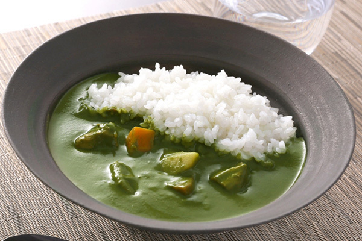
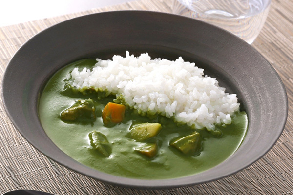
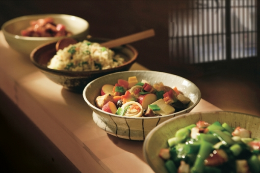
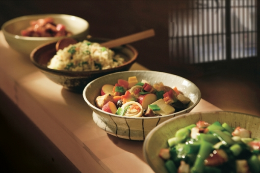

Kyoto Gourmet
ItohKyuemon

 

A prestigious teahouse in Uji, famous for the Phoenix Hall of Byodo-in Temple, and famous for its Uji tea.
Foods that make use of matcha are also being developed, such as various matcha sweets, matcha soba, and matcha curry.
The popular matcha parfait contains red bean paste, chestnuts, matcha ice cream, and shiratama (rice cake ball).
19-3 Todo, Uji-shi, Kyoto-fu 611-0013 Japan
81-774-23-3955
Information
Map
Rokkakuya
 


The recommendation is the Obanzai that is particular about the soup stock.
Depending on the season, there are always 7-8 types of obanzai made with
a special broth made from bonito and mackerel flakes.
Best as a snack with Sake.
B1 Neohiruzubiru, 172 Higashisakaicho Shimogyo-ku, Kyoto-shi, Kyoto-fu 600-8217 Japan
81-75-354-3789
Information
Map
Top page